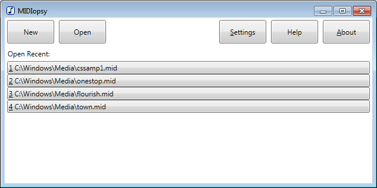

Editing Screen
MIDIopsy is used to view, edit, and play MIDI files. The user is assumed to be familiar with the standard MIDI file format. (For more information, see Online Resources at the bottom of this page.)
The user interface has an "opening screen" and an "editing screen." When the application is launched, the opening screen is shown.

Opening Screen
When a file is open, it is shown in the editing screen. The file contents are divided up into rows within a grid/list view. Chunks are separated by empty rows (which cannot be selected). Each row within a track chunk represents an MTrk event.
Editing Screen
The leftmost column contains the binary contents of the file (in hexadecimal format), while the other columns contain user-friendly comments. (Note that Total Time is not stored in the file; it is calculated from Delta-time.) Column widths can be adjusted as desired. To exit the editing screen and return to the opening screen (effectively closing the file), click Done (or press Esc).
These commands can be executed from the opening screen.
These commands can be executed from the editing screen (when a file is open).
Warning: MIDI file editing is for expert users only. If not done correctly, it could result in data corruption, making the file unusable. Proceed at your own risk!
| Event | Button | Required Input |
|---|---|---|
| MIDI channel message | Channel Event |
|
| system exclusive (sysex) message | SysEx Event |
|
| meta-event | Meta-event |
|
When a MIDI file is opened or saved, MIDIopsy also loads it for media playback. (A new file must be saved before it can be played.) If the file has not been saved since it was last edited, it must be saved in order to play the current version (with the most recent edits).
Playback starts at the indicated Starting Position (SP), which can be set to any position within the indicated Duration. When a file is loaded for playback, its Starting Position defaults to 00:00:00, and its Duration is determined. During playback, the current Position is updated.
| Command | Shortcut |
|---|---|
| New | Ctrl+N |
| Open | Ctrl+O |
| Settings | Alt+S |
| Help | F1 |
| About | Alt+A |
| Open Recent | Alt+number |
| Group | Command | Shortcut |
|---|---|---|
| Save | Ctrl+S | |
| Save As | Ctrl+Shift+S | |
| Done | Esc | |
| Settings | Alt+S | |
| Help | F1 | |
| About | Alt+A | |
| New Item | Track | Alt+K |
| Channel Event | Alt+C | |
| SysEx Event | Alt+X | |
| Meta-event | Alt+M | |
| Edit Item | Properties | F4 |
| Cut | Ctrl+X | |
| Copy | Ctrl+C | |
| Paste | Ctrl+V | |
| Delete | Del | |
| Navigation | Go To | Ctrl+G |
| Playback | Play | F5 |
| Stop | ||
| Starting Position (SP) | Alt+T | |
| Reset SP | F6 | |
| Sync SP | F7 | |
| Position | Alt+P | |
| Duration | Alt+D |
| Number | Note | Number | Note | Number | Note | Number | Note | |||
|---|---|---|---|---|---|---|---|---|---|---|
| 0 | C - / B# - | 32 | Ab 1 / G# 1 | 64 | Fb 4 / E 4 | 96 | C 7 / B# 7 | |||
| 1 | Db - / C# - | 33 | A 1 | 65 | F 4 / E# 4 | 97 | Db 7 / C# 7 | |||
| 2 | D - | 34 | Bb 1 / A# 1 | 66 | Gb 4 / F# 4 | 98 | D 7 | |||
| 3 | Eb - / D# - | 35 | Cb 1 / B 1 | 67 | G 4 | 99 | Eb 7 / D# 7 | |||
| 4 | Fb - / E - | 36 | C 2 / B# 2 | 68 | Ab 4 / G# 4 | 100 | Fb 7 / E 7 | |||
| 5 | F - / E# - | 37 | Db 2 / C# 2 | 69 | A 4 | 101 | F 7 / E# 7 | |||
| 6 | Gb - / F# - | 38 | D 2 | 70 | Bb 4 / A# 4 | 102 | Gb 7 / F# 7 | |||
| 7 | G - | 39 | Eb 2 / D# 2 | 71 | Cb 4 / B 4 | 103 | G 7 | |||
| 8 | Ab - / G# - | 40 | Fb 2 / E 2 | 72 | C 5 / B# 5 | 104 | Ab 7 / G# 7 | |||
| 9 | A - | 41 | F 2 / E# 2 | 73 | Db 5 / C# 5 | 105 | A 7 | |||
| 10 | Bb - / A# - | 42 | Gb 2 / F# 2 | 74 | D 5 | 106 | Bb 7 / A# 7 | |||
| 11 | Cb - / B - | 43 | G 2 | 75 | Eb 5 / D# 5 | 107 | Cb 7 / B 7 | |||
| 12 | C 0 / B# 0 | 44 | Ab 2 / G# 2 | 76 | Fb 5 / E 5 | 108 | C 8 / B# 8 | |||
| 13 | Db 0 / C# 0 | 45 | A 2 | 77 | F 5 / E# 5 | 109 | Db 8 / C# 8 | |||
| 14 | D 0 | 46 | Bb 2 / A# 2 | 78 | Gb 5 / F# 5 | 110 | D 8 | |||
| 15 | Eb 0 / D# 0 | 47 | Cb 2 / B 2 | 79 | G 5 | 111 | Eb 8 / D# 8 | |||
| 16 | Fb 0 / E 0 | 48 | C 3 / B# 3 | 80 | Ab 5 / G# 5 | 112 | Fb 8 / E 8 | |||
| 17 | F 0 / E# 0 | 49 | Db 3 / C# 3 | 81 | A 5 | 113 | F 8 / E# 8 | |||
| 18 | Gb 0 / F# 0 | 50 | D 3 | 82 | Bb 5 / A# 5 | 114 | Gb 8 / F# 8 | |||
| 19 | G 0 | 51 | Eb 3 / D# 3 | 83 | Cb 5 / B 5 | 115 | G 8 | |||
| 20 | Ab 0 / G# 0 | 52 | Fb 3 / E 3 | 84 | C 6 / B# 6 | 116 | Ab 8 / G# 8 | |||
| 21 | A 0 | 53 | F 3 / E# 3 | 85 | Db 6 / C# 6 | 117 | A 8 | |||
| 22 | Bb 0 / A# 0 | 54 | Gb 3 / F# 3 | 86 | D 6 | 118 | Bb 8 / A# 8 | |||
| 23 | Cb 0 / B 0 | 55 | G 3 | 87 | Eb 6 / D# 6 | 119 | Cb 8 / B 8 | |||
| 24 | C 1 / B# 1 | 56 | Ab 3 / G# 3 | 88 | Fb 6 / E 6 | 120 | C 9 / B# 9 | |||
| 25 | Db 1 / C# 1 | 57 | A 3 | 89 | F 6 / E# 6 | 121 | Db 9 / C# 9 | |||
| 26 | D 1 | 58 | Bb 3 / A# 3 | 90 | Gb 6 / F# 6 | 122 | D 9 | |||
| 27 | Eb 1 / D# 1 | 59 | Cb 3 / B 3 | 91 | G 6 | 123 | Eb 9 / D# 9 | |||
| 28 | Fb 1 / E 1 | 60 | C 4 / B# 4 | 92 | Ab 6 / G# 6 | 124 | Fb 9 / E 9 | |||
| 29 | F 1 / E# 1 | 61 | Db 4 / C# 4 | 93 | A 6 | 125 | F 9 / E# 9 | |||
| 30 | Gb 1 / F# 1 | 62 | D 4 | 94 | Bb 6 / A# 6 | 126 | Gb 9 / F# 9 | |||
| 31 | G 1 | 63 | Eb 4 / D# 4 | 95 | Cb 6 / B 6 | 127 | G 9 |
| MIDI Key | Drum Sound | MIDI Key | Drum Sound | MIDI Key | Drum Sound | ||
|---|---|---|---|---|---|---|---|
| 35 | Acoustic Bass Drum | 51 | Ride Cymbal 1 | 67 | High Agogo | ||
| 36 | Bass Drum 1 | 52 | Chinese Cymbal | 68 | Low Agogo | ||
| 37 | Side Stick | 53 | Ride Bell | 69 | Cabasa | ||
| 38 | Acoustic Snare | 54 | Tambourine | 70 | Maracas | ||
| 39 | Hand Clap | 55 | Splash Cymbal | 71 | Short Whistle | ||
| 40 | Electric Snare | 56 | Cowbell | 72 | Long Whistle | ||
| 41 | Low Floor Tom | 57 | Crash Cymbal 2 | 73 | Short Guiro | ||
| 42 | Closed Hi Hat | 58 | Vibraslap | 74 | Long Guiro | ||
| 43 | High Floor Tom | 59 | Ride Cymbal 2 | 75 | Claves | ||
| 44 | Pedal Hi-Hat | 60 | Hi Bongo | 76 | Hi Wood Block | ||
| 45 | Low Tom | 61 | Low Bongo | 77 | Low Wood Block | ||
| 46 | Open Hi-Hat | 62 | Mute Hi Conga | 78 | Mute Cuica | ||
| 47 | Low-Mid Tom | 63 | Open Hi Conga | 79 | Open Cuica | ||
| 48 | Hi Mid Tom | 64 | Low Conga | 80 | Mute Triangle | ||
| 49 | Crash Cymbal 1 | 65 | High Timbale | 81 | Open Triangle | ||
| 50 | High Tom | 66 | Low Timbale |
| Control # | Control Function | Control # | Control Function | |
|---|---|---|---|---|
| 0 | Bank Select | 56 | LSB for value 24 | |
| 1 | Modulation wheel or lever | 57 | LSB for value 25 | |
| 2 | Breath Controller | 58 | LSB for value 26 | |
| 4 | Foot controller | 59 | LSB for value 27 | |
| 5 | Portamento time | 60 | LSB for value 28 | |
| 6 | Data entry MSB | 61 | LSB for value 29 | |
| 7 | Channel Volume | 62 | LSB for value 30 | |
| 8 | Balance | 63 | LSB for value 31 | |
| 10 | Pan | 64 | Sustain/Damper pedal | |
| 11 | Expression Controller | 65 | Portamento On/Off | |
| 12 | Effect Control 1 | 66 | Sostenuto | |
| 13 | Effect Control 2 | 67 | Soft pedal | |
| 16 | General Purpose Controller # 1 | 68 | Legato Footswitch | |
| 17 | General Purpose Controller # 2 | 69 | Hold 2 | |
| 18 | General Purpose Controller # 3 | 70 | Sound Controller 1 | |
| 19 | General Purpose Controller # 4 | 71 | Sound Controller 2 | |
| 32 | LSB for value 0 | 72 | Sound Controller 3 | |
| 33 | LSB for value 1 | 73 | Sound Controller 4 | |
| 34 | LSB for value 2 | 74 | Sound Controller 5 | |
| 35 | LSB for value 3 | 75 | Sound Controller 6 | |
| 36 | LSB for value 4 | 76 | Sound Controller 7 | |
| 37 | LSB for value 5 | 77 | Sound Controller 8 | |
| 38 | LSB for value 6 | 78 | Sound Controller 9 | |
| 39 | LSB for value 7 | 79 | Sound Controller 10 | |
| 40 | LSB for value 8 | 80 | General Purpose Controller # 5 | |
| 41 | LSB for value 9 | 81 | General Purpose Controller # 6 | |
| 42 | LSB for value 10 | 82 | General Purpose Controller # 7 | |
| 43 | LSB for value 11 | 83 | General Purpose Controller # 8 | |
| 44 | LSB for value 12 | 84 | Portamento Control | |
| 45 | LSB for value 13 | 91 | Effects 1 Depth | |
| 46 | LSB for value 14 | 92 | Effects 2 Depth | |
| 47 | LSB for value 15 | 93 | Effects 3 Depth | |
| 48 | LSB for value 16 | 94 | Effects 4 Depth | |
| 49 | LSB for value 17 | 95 | Effects 5 Depth | |
| 50 | LSB for value 18 | 96 | Data increment | |
| 51 | LSB for value 19 | 97 | Data decrement | |
| 52 | LSB for value 20 | 98 | Non-Registered Parameter Number LSB | |
| 53 | LSB for value 21 | 99 | Non-Registered Parameter Number MSB | |
| 54 | LSB for value 22 | 100 | Registered Parameter Number LSB | |
| 55 | LSB for value 23 | 101 | Registered Parameter Number MSB |
| Control # | Control Function |
|---|---|
| 120 | All Sound Off |
| 121 | Reset All Controllers |
| 122 | Local Control |
| 123 | All Notes Off |
| 124 | Omni Mode Off |
| 125 | Omni Mode On |
| 126 | Mono Mode On |
| 127 | Poly Mode On |
| Prog # | Instrument | Prog # | Instrument | Prog # | Instrument | Prog # | Instrument | |||
|---|---|---|---|---|---|---|---|---|---|---|
| 0 | Acoustic Grand Piano | 32 | Acoustic Bass | 64 | Soprano Sax | 96 | FX 1 (rain) | |||
| 1 | Bright Acoustic Piano | 33 | Electric Bass (finger) | 65 | Alto Sax | 97 | FX 2 (soundtrack) | |||
| 2 | Electric Grand Piano | 34 | Electric Bass (pick) | 66 | Tenor Sax | 98 | FX 3 (crystal) | |||
| 3 | Honky-tonk Piano | 35 | Fretless Bass | 67 | Baritone Sax | 99 | FX 4 (atmosphere) | |||
| 4 | Electric Piano 1 | 36 | Slap Bass 1 | 68 | Oboe | 100 | FX 5 (brightness) | |||
| 5 | Electric Piano 2 | 37 | Slap Bass 2 | 69 | English Horn | 101 | FX 6 (goblins) | |||
| 6 | Harpsichord | 38 | Synth Bass 1 | 70 | Bassoon | 102 | FX 7 (echoes) | |||
| 7 | Clavi | 39 | Synth Bass 2 | 71 | Clarinet | 103 | FX 8 (sci-fi) | |||
| 8 | Celesta | 40 | Violin | 72 | Piccolo | 104 | Sitar | |||
| 9 | Glockenspiel | 41 | Viola | 73 | Flute | 105 | Banjo | |||
| 10 | Music Box | 42 | Cello | 74 | Recorder | 106 | Shamisen | |||
| 11 | Vibraphone | 43 | Contrabass | 75 | Pan Flute | 107 | Koto | |||
| 12 | Marimba | 44 | Tremolo Strings | 76 | Blown Bottle | 108 | Kalimba | |||
| 13 | Xylophone | 45 | Pizzicato Strings | 77 | Shakuhachi | 109 | Bag pipe | |||
| 14 | Tubular Bells | 46 | Orchestral Harp | 78 | Whistle | 110 | Fiddle | |||
| 15 | Dulcimer | 47 | Timpani | 79 | Ocarina | 111 | Shanai | |||
| 16 | Drawbar Organ | 48 | String Ensemble 1 | 80 | Lead 1 (square) | 112 | Tinkle Bell | |||
| 17 | Percussive Organ | 49 | String Ensemble 2 | 81 | Lead 2 (sawtooth) | 113 | Agogo | |||
| 18 | Rock Organ | 50 | SynthStrings 1 | 82 | Lead 3 (calliope) | 114 | Steel Drums | |||
| 19 | Church Organ | 51 | SynthStrings 2 | 83 | Lead 4 (chiff) | 115 | Woodblock | |||
| 20 | Reed Organ | 52 | Choir Aahs | 84 | Lead 5 (charang) | 116 | Taiko Drum | |||
| 21 | Accordion | 53 | Voice Oohs | 85 | Lead 6 (voice) | 117 | Melodic Tom | |||
| 22 | Harmonica | 54 | Synth Voice | 86 | Lead 7 (fifths) | 118 | Synth Drum | |||
| 23 | Tango Accordion | 55 | Orchestra Hit | 87 | Lead 8 (bass + lead) | 119 | Reverse Cymbal | |||
| 24 | Acoustic Guitar (nylon | 56 | Trumpet | 88 | Pad 1 (new age) | 120 | Guitar Fret Noise | |||
| 25 | Acoustic Guitar (steel) | 57 | Trombone | 89 | Pad 2 (warm) | 121 | Breath Noise | |||
| 26 | Electric Guitar (jazz) | 58 | Tuba | 90 | Pad 3 (polysynth) | 122 | Seashore | |||
| 27 | Electric Guitar (clean) | 59 | Muted Trumpet | 91 | Pad 4 (choir) | 123 | Bird Tweet | |||
| 28 | Electric Guitar (muted | 60 | French Horn | 92 | Pad 5 (bowed) | 124 | Telephone Ring | |||
| 29 | Overdriven Guitar | 61 | Brass Section | 93 | Pad 6 (metallic) | 125 | Helicopter | |||
| 30 | Distortion Guitar | 62 | SynthBrass 1 | 94 | Pad 7 (halo) | 126 | Applause | |||
| 31 | Guitar harmonics | 63 | SynthBrass 2 | 95 | Pad 8 (sweep) | 127 | Gunshot |
| Type | Meta-Event | Type | Meta-Event | Type | Meta-Event | ||
|---|---|---|---|---|---|---|---|
| 0 | Sequence Number | 5 | Lyric | 81 | Set Tempo | ||
| 1 | Text Event | 6 | Marker | 84 | SMPTE Offset | ||
| 2 | Copyright Notice | 7 | Cue Point | 88 | Time Signature | ||
| 3 | Sequence/Track Name | 32 | MIDI Channel Prefix | 89 | Key Signature | ||
| 4 | Instrument Name | 47 | End of Track | 127 | Sequencer-Specific Meta-Event |
| Data (hex) | Key Signature | Data (hex) | Key Signature | |
|---|---|---|---|---|
| F9 00 | Cb major | F9 01 | Ab minor | |
| FA 00 | Gb major | FA 01 | Eb minor | |
| FB 00 | Db major | FB 01 | Bb minor | |
| FC 00 | Ab major | FC 01 | F minor | |
| FD 00 | Eb major | FD 01 | C minor | |
| FE 00 | Bb major | FE 01 | G minor | |
| FF 00 | F major | FF 01 | D minor | |
| 00 00 | C major | 00 01 | A minor | |
| 01 00 | G major | 01 01 | E minor | |
| 02 00 | D major | 02 01 | B minor | |
| 03 00 | A major | 03 01 | F# minor | |
| 04 00 | E major | 04 01 | C# minor | |
| 05 00 | B major | 05 01 | G# minor | |
| 06 00 | F# major | 06 01 | D# minor | |
| 07 00 | C# major | 07 01 | A# minor |
For more details on MIDI and MIDI specifications, please visit https://www.midi.org/.